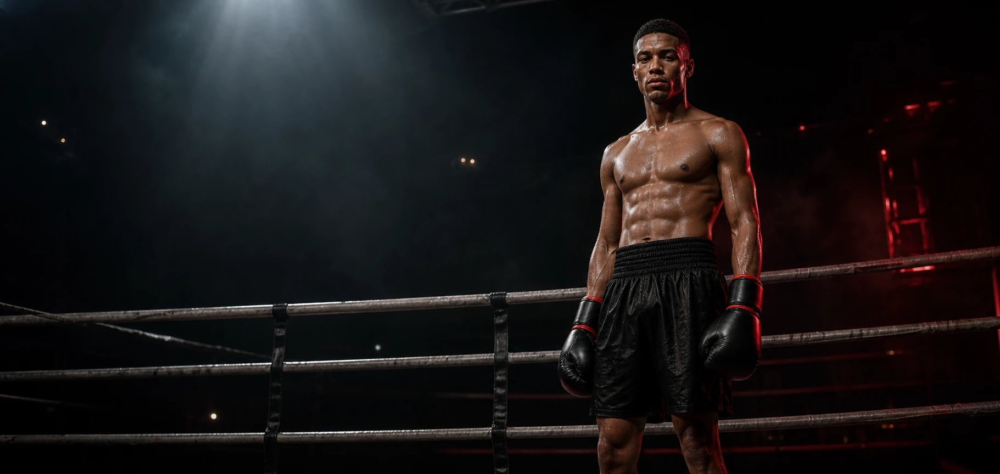
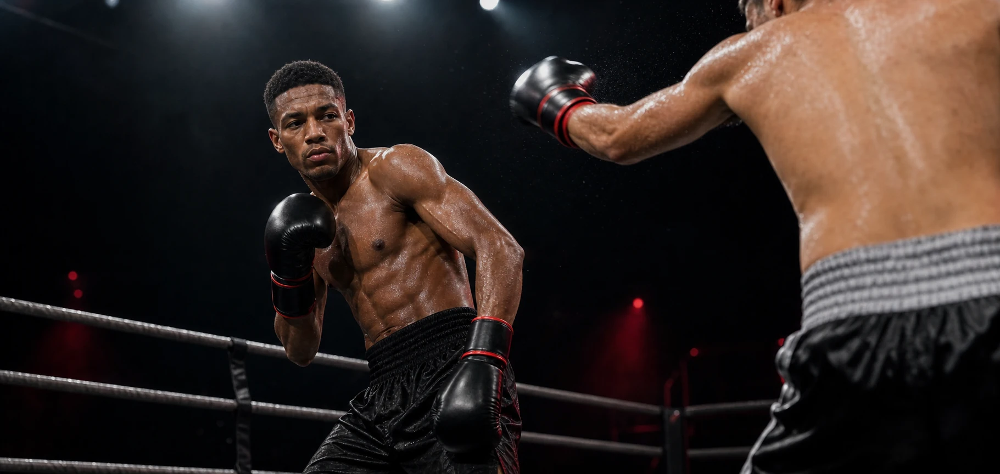
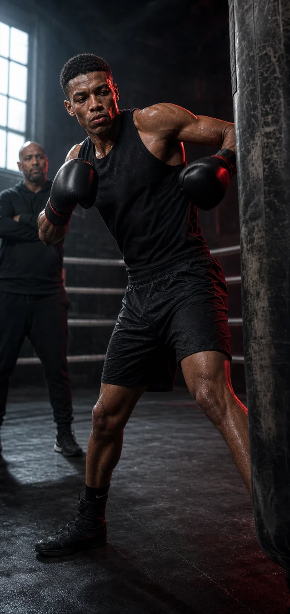

Amsterdam · Super lightweight · Professional
TYTRINH
Built under pressure.
01 PROFIEL
DISCIPLINE IS DE ECHTE TEGENSTANDER
Talent opent de deur.
Werk bepaalt hoe ver je komt.
TY TRINH staat voor gecontroleerde kracht, compromisloze voorbereiding en professioneel gedrag — binnen én buiten de ring. Geen ruis. Geen shortcuts. Iedere training, wedstrijd en samenwerking is gebouwd voor het hoogste niveau.
Discipline
Presteren begint wanneer niemand kijkt.
Precision
Rust zien waar anderen chaos ervaren.
Progress
Iedere ronde scherper dan de vorige.

TT / 01202 PERFORMANCE
COMPOSED IN THE CHAOS
Een stijl gebouwd op timing.
Pressure without panic
Technisch boksen vanuit controle: afstand breken, tempo bepalen en toeslaan zodra de opening ontstaat.
- Compacte verdediging
- Explosieve counters
- Conditionele druk
03 FIGHT RECORD
Elke wedstrijd.
Een stap omhoog.
Mateo SilvaAmsterdam · 2026
TKO · R612–0Leon DupontRotterdam · 2025
UD · R1011–0Yusuf KarimAntwerpen · 2025
KO · R410–0Marco JensenEindhoven · 2024
TKO · R79–0Conceptuele wedstrijddata voor deze mockup.
04 THE WORK
WAT JE ZIET IS DE WEDSTRIJD. WAT JE NIET ZIET IS HET WERK.
Built in the hours no one records.
“Confidence is earned before the lights come on.”
06:00First session10×Rounds prepared365Days committed

Camp / 202605 PARTNERSHIPS
MEER DAN EEN LOGO OP EEN SHORT
Samen bouwen aan impact.
Voor merken die discipline, performance en vooruitgang geloofwaardig willen verbinden aan een topsportverhaal.
Brand partner
Langdurige zichtbaarheid rond trainingscampagnes, wedstrijden en content.
Campaign athlete
Een geloofwaardig gezicht voor performance-, lifestyle- en sportcampagnes.
Event & media
Appearances, talks, gym activations, interviews en branded experiences.
06 MEDIA PROFILE
EEN VERHAAL DAT VERDER GAAT DAN DE RING
Performance.
Personality. Reach.
Een moderne atleet met een duidelijke visuele identiteit en contentpijlers die fans, media en commerciële partners verbinden.
Training, voorbereiding en herstel.
Wedstrijden, backstage en analyse.
Mindset, stijl en ondernemerschap.
Gebouwd voor internationale groei.
07 CONTACT
LET'S BUILD THE NEXT ROUND
Klaar om samen te winnen?
Voor sponsorships, promotors, media, appearances en commerciële samenwerkingen.
team@tytrinh.comManagement · Amsterdam